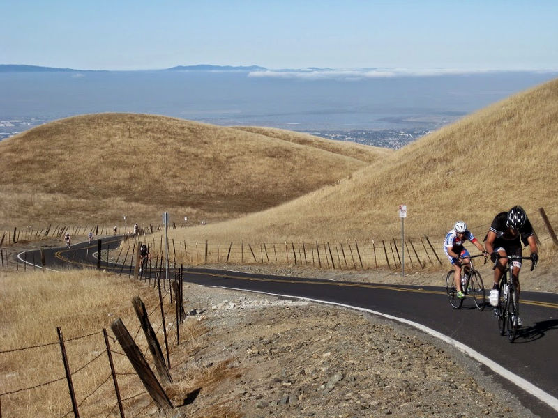

|
 |
 |
|  |
| approaching the summit (Christine Holmes) |
Another successful Low-Key week, and more fantastic times, not only at the head of the standings, but additionally from some Low-Key long-timers who produced personal bests! Huge thanks to our coordinators this week, Lynn and Joe, and to all of our great volunteers!!!!
Is it the warm weather? The motivating speeches of our excellent coordinators? Bikes becoming torsionally stiff, yet vertically compliant? For whatever reason, the first two climbs this year have resulted in some rippin'-fast times, with 4 of the top 5 all-time Low-Key men's times, 2 of the top 3 women's times, and our best all-time hybrid-electric time all set today. No tandems were at the climb this year, so Ileana and Bob Parker's 2007 record stands. But in the men's division, both Menso De Jong and Hans Detlefsen topped Jesse Miller-Smiths's 21:15 from 2011, with Stefano Profumo and Brian Lucido finishing ahead of Carl Nielson's 2011 time. Chris Isley's winning 22:26 from 2007 would have placed 6th today.
Among the women, Christine Thorburn's 25:53 from 2007 is safe, but both McLovely Brown and Helen Casabona beat Helen's 2007 time, which had been second best. Both of these riders beat McLovely's existing Strava QOM.
And in the hybrid-electric division, Bill Bushnell extended his record from 14:45 to 14:22. Come on people: I write this from Switzerland where E-Bikes are all over. We need to get some more participation in the E-Bike division!!!
In the team standings, it was Sisters and Misters producing a crushing 390+ points, with Hans teaming up with Brian Lucido, back from an extended European tandem tour with Janet Wagner (who was reportedly doing most of the work, but that's insider info) and Robert Easley. Squadra SF came ready to play, and 377 points normally would be enough to dominate the week's standings, but this week it was only enough for a distance 2nd: Stefano Profumo and Chris Evans led that effort, with points also contributed by Giel De Nijs. In third, the coordinating The Brown Zone team led by Rich and McLovely Brown, but additionally with solid points from week 2 recruit Daryl Spano.
Remember, though, points can shift a bit as the series progresses, and the relative scores of different climbs change based on changing assessment of the average rider speed. So the points quoted here may shift slightly.
Here's the coordinator report:
The Sierra climb for week 2 of the 2014 LKHC series is now in the books. It was a beautiful fall day with a bit of morning fog that burned off quickly and yielded to perfect climbing conditions.
Bill Bushnell smashed Chris Horner’s Tour of California 18 minute KOM time with his electric bike at a time of 14:22.
Former Jelly-Belly and Wonderful Pistachios pro, expert MTB rider, Low-Key junior leader, and local Mitty HS alumn Menso De Jong rode away from a strong field and put the power to the pedals to set a LKHC record of 20:21.
In the women’s field, McLovely Brown was still recovering from the post Montebello climb lung-munge hangover, but still managed to set a new women’s LKHC record time and pull out a closely fought victory over a strong second place Helen Casabona.
Thanks to the efforts of the Santa Clara Open Space Authority, there was a newly paved parking area at the top of the climb so that we could cool down to relax and enjoy the post-ride snacks in style. The Open Space has created a new entrance for hikers and cyclists to enjoy the hills above Alum Rock Park on the south side of Sierra Rd. And thanks to the Santa Clara Valley Water District, there were several “Brown is the New Green” signs installed in various places along the Sierra Rd climb – presumably as encouragement and motivation to the Brown Zone team.
And, for a rider perspective, Check out Adam Tow's report here
KOM special mention qualifiers indicated with orange background.
| pl | # | name | team | cat | time | mph | fph | score |
|---|---|---|---|---|---|---|---|---|
| 1 | 34 | McLovely Brown | The Brown Zone | Mother Of Two | 27:10 | 8.08 | 3885 | 127.45 |
| 2 | 39 | Helen Casabona | Pen Velo/Pomodoro | 50+ | 27:26 | 8.00 | 3847 | 126.23 |
| 3 | 138 | Amber Schult | LGBRC | 40+ | 28:34 | 7.69 | 3695 | 121.31 |
| 4 | 224 | Tracy Lillig | CA Technologies | Make It To The Top | 28:56 | 7.59 | 3648 | 119.80 |
| 5 | 202 | Honey Badger Brown | The Brown Zone | Last One! | 29:06 | 7.55 | 3627 | 119.13 |
| 6 | 228 | Jennie Phillips | Sr's & Mr's of No Mercy | 50+ | 29:42 | 7.39 | 3554 | 116.76 |
| 7 | 94 | Louise Kobin | No team | 45+ | 29:47 | 7.37 | 3544 | 116.44 |
| 8 | 140 | Marty Scott | LGBRC | 55+ | 30:12 | 7.27 | 3495 | 114.86 |
| 9 | 50 | Christina Davis | LGBRC | 45+ | 31:48 | 6.91 | 3319 | 109.19 |
| 10 | 142 | Ariadne Smith | Diablo | 25+ | 32:46 | 6.70 | 3221 | 106.02 |
| 11 | 220 | Sandra King | Equipe Flamme Rouge | 45+ | 34:31 | 6.36 | 3058 | 100.74 |
| 12 | 52 | Bonnie Denoyer | Scott | 45+ | 36:24 | 6.03 | 2899 | 95.62 |
| 13 | 60 | Lisa Emmerich | Sr's & Mr's of No Mercy | 50+ | 39:11 | 5.60 | 2693 | 88.95 |
| 14 | 214 | Otis Gilchrist | Atlas | Vintage Bike (With Skewers) | 43:39 | 5.03 | 2418 | 80.00 |
reference time for division Women = 34:46
| pl | # | name | team | cat | time | mph | fph | score |
|---|---|---|---|---|---|---|---|---|
| 1 | 207 | Menso De Jong | Team Clif Bar Cycling | Not Yet Off-Season | 20:21 | 10.79 | 5186 | 140.78 |
| 2 | 208 | Hanns Detlefsen | Sr's & Mr's of No Mercy | 40+ | 20:40 | 10.63 | 5107 | 138.67 |
| 3 | 122 | Stefano Profumo | Squadra SF | 35+ | 21:40 | 10.14 | 4871 | 132.38 |
| 4 | 225 | Brian Lucido | Sr's & Mr's of No Mercy | 35+ | 21:53 | 10.04 | 4823 | 131.09 |
| 5 | 61 | Chris Evans | Squadra SF | 2 | 22:11 | 9.90 | 4758 | 129.35 |
| 6 | 99 | Bill Laddish | Team CVC | 35+ | 22:34 | 9.73 | 4677 | 127.19 |
| 7 | 232 | Kieran Sherlock | IdentityMind | 45+ | 23:07 | 9.50 | 4566 | 124.22 |
| 8 | 14 | Rich McLovin Brown | The Brown Zone | 35+ | 23:30 | 9.34 | 4491 | 122.23 |
| 9 | 149 | Joseph Sullivan | San Jose Bike Club | 35+ | 23:37 | 9.30 | 4469 | 121.64 |
| 10 | 222 | Joe Lemire | Mystic Ramblers | 65+ | 23:50 | 9.21 | 4428 | 120.55 |
| 11 | 109 | Shahram Moatazedi | LGBRC | 40+ | 23:53 | 9.19 | 4419 | 120.30 |
| 12 | 87 | Joe Karbowski | Team Ryan Powell | 35+ | 23:58 | 9.16 | 4404 | 119.89 |
| 13 | 211 | Robert Easley | Sr's & Mr's of No Mercy | 45+ | 24:00 | 9.15 | 4398 | 119.73 |
| 14 | 49 | Andy Crews | Diablo | 40+ | 24:31 | 8.96 | 4305 | 117.25 |
| 15 | 219 | Jason Kangas | Team ARP | 35+ | 24:37 | 8.92 | 4287 | 116.78 |
| 16 | 112 | Rob Nast | Plus 3 | 50+ | 24:45 | 8.87 | 4264 | 116.17 |
| 17 | 51 | Giel De Nijs | Squadra SF | 1 | 25:03 | 8.77 | 4213 | 114.80 |
| 18 | 146 | Daryl Spano | The Brown Zone | 45+ | 25:11 | 8.72 | 4191 | 114.20 |
| 19 | 235 | Brandon Smith | Team CVC | 25+ | 25:20 | 8.67 | 4166 | 113.54 |
| 20 | 90 | Glen Kinion | Sr's & Mr's of No Mercy | 50+ | 25:21 | 8.66 | 4163 | 113.47 |
| 21 | 230 | Travis Retzer | Team CVC | 30+ | 25:35 | 8.58 | 4125 | 112.45 |
| 22 | 213 | Lindsey Furtado | Team CVC | 30+ | 25:40 | 8.56 | 4112 | 112.09 |
| 23 | 67 | Klaus Fleischmann | Pen Velo/Pomodoro | 45+ | 25:52 | 8.49 | 4080 | 111.24 |
| 24 | 201 | Jeff Botelho | CA Technologies | 45+ | 25:56 | 8.47 | 4070 | 110.96 |
| 25 | 78 | Rich Hill | LGBRC | 45+ | 26:06 | 8.41 | 4044 | 110.26 |
| 26 | 96 | Scott Krahn | LGBRC | 30+ | 26:16 | 8.36 | 4018 | 109.58 |
| 27 | 95 | Patrick Konsor | Unattached | 25+ | 26:17 | 8.36 | 4015 | 109.51 |
| 28 | 89 | Mark King | Equipe Flamme Rouge | 45+ | 26:21 | 8.33 | 4005 | 109.24 |
| 29 | 119 | Jim Perreira | Team Bici | 45+ | 26:30 | 8.29 | 3983 | 108.63 |
| 30 | 80 | Jason Hopkins | Team CVC | 40+ | 26:34 | 8.27 | 3973 | 108.36 |
| 31 | 229 | Alex Poloziouk | CAT 6 | 35+ | 26:36 | 8.26 | 3968 | 108.23 |
| 32 | 75 | BIll Harkola | Pen Velo/Pomodoro | 55+ | 26:37 | 8.25 | 3965 | 108.16 |
| 33 | 59 | Christopher Elbo | Squadra SF | 35+ | 26:38 | 8.25 | 3963 | 108.10 |
| 34 | 69 | Danny Froeming | Sr's & Mr's of No Mercy | 50+ | 26:40 | 8.23 | 3958 | 107.96 |
| 35 | 227 | Christian Paquet | Doogie | 55+ | 26:42 | 8.22 | 3953 | 107.83 |
| 36 | 101 | Robert Lojek | 35+ | 26:43 | 8.22 | 3950 | 107.76 | |
| 37 | 15 | Kevin Comerford | Sr's & Mr's of No Mercy | 35+ | 26:54 | 8.16 | 3923 | 107.04 |
| 38 | 133 | Dave Rossow | LuxVue-SunPower | 45+ | 27:13 | 8.07 | 3878 | 105.82 |
| 39 | 205 | Phil Clark | 30+ | 27:18 | 8.04 | 3866 | 105.50 | |
| 40 | 223 | George Lillig | CA Technologies | Make It To The Top | 27:35 | 7.96 | 3826 | 104.44 |
| 41 | 212 | Roland Freund | 55+ | 27:37 | 7.95 | 3822 | 104.32 | |
| 42 | 221 | West Kurihara | Team Fremont FFBC p/b Chipotle | 55+ | 27:39 | 7.94 | 3817 | 104.19 |
| 43 | 215 | Theo Goguely | Diablo | Cat Off-Season | 28:17 | 7.76 | 3732 | 101.90 |
| 44 | 12 | Will Von Kaenel | LGBRC | 55+ | 28:21 | 7.75 | 3723 | 101.66 |
| 45 | 64 | David Fisch | Cycleholics | 55+ Cat 4 | 28:22 | 7.74 | 3721 | 101.61 |
| 46 | 218 | Peter Hamilton | The Brown Zone | 3 | 28:23 | 7.74 | 3718 | 101.55 |
| 47 | 84 | Peter Ingram | Steely Man | 55+ | 28:27 | 7.72 | 3710 | 101.31 |
| 48 | 31 | Geoffrey Bower | DASH | 30+ | 28:28 | 7.71 | 3707 | 101.26 |
| 49 | 226 | Chris Mickelsen | chris mickelsen | 55+ | 28:40 | 7.66 | 3682 | 100.56 |
| 50 | 120 | Ryan Powell | Team Joe Karbowski | 35+ | 28:45 | 7.64 | 3671 | 100.28 |
| 51 | 118 | Ramon Periquet | Team CVC | 50+ | 28:47 | 7.63 | 3667 | 100.16 |
| 52 | 22 | Bruno Acklin | Clagnuts | 50+ | 29:05 | 7.55 | 3629 | 99.15 |
| 53 | 121 | Thomas Preisler | San Jose Bike Club | 55+ | 29:16 | 7.50 | 3606 | 98.54 |
| 54 | 66 | Andrew Fitzhugh | 50+ | 29:22 | 7.48 | 3594 | 98.21 | |
| 55 | 82 | Martin Hyland | Team Diable | 55+ | 29:22 | 7.48 | 3594 | 98.21 |
| 56 | 217 | Reid Griggs | Team Griggs | 30+ | 29:27 | 7.46 | 3584 | 97.93 |
| 57 | 110 | Ilya Moskovko | the campbell crew | 25+ | 29:38 | 7.41 | 3562 | 97.34 |
| 58 | 200 | Sam Beal | Chain Reaction | 60+ | 29:41 | 7.40 | 3556 | 97.18 |
| 59 | 114 | Bart Niechwiej | 35+ | 29:44 | 7.39 | 3550 | 97.02 | |
| 60 | 124 | Mihai R. | 35+ | 30:09 | 7.28 | 3500 | 95.70 | |
| 61 | 85 | Tim Irvine | LGBRC | 40+ | 30:15 | 7.26 | 3489 | 95.39 |
| 62 | 210 | Bruce Downs | Team CVC | 55+ | 30:16 | 7.26 | 3487 | 95.34 |
| 63 | 203 | Sam Burnett | Just For The View At The Top | 30:28 | 7.21 | 3464 | 94.72 | |
| 64 | 40 | Peter Cathcart | San Jose Bike Club | 50+ | 30:29 | 7.20 | 3462 | 94.67 |
| 65 | 250 | Kevin Kennedy | CA Technologies | 30:38 | 7.17 | 3445 | 94.22 | |
| 66 | 237 | Scott Violet | 40+ | 30:46 | 7.14 | 3430 | 93.82 | |
| 67 | 206 | Vincent Cummings | NightRiders | 55+ | 30:49 | 7.13 | 3425 | 93.67 |
| 68 | 117 | Frank Paysen | Chain Reaction | 50+ | 30:57 | 7.10 | 3410 | 93.27 |
| 69 | 160 | Brian Ward | Zombie Raccoon | 40+ | 31:10 | 7.05 | 3386 | 92.64 |
| 70 | 236 | Greg Thomas | DASH | 45+ | 31:14 | 7.03 | 3379 | 92.44 |
| 71 | 162 | Han Wen | Grumpy Old Men (GOM) | 45+ | 31:15 | 7.03 | 3377 | 92.39 |
| 72 | 233 | Liam Sherlock | IdentityMind | Junior | 31:22 | 7.00 | 3365 | 92.06 |
| 73 | 35 | Nicholas Brummell | Atlas | 50+ Slower Than A Turkey | 32:08 | 6.83 | 3284 | 89.90 |
| 74 | 139 | Jeremy Scott | Scott | 40+ | 32:12 | 6.82 | 3278 | 89.72 |
| 75 | 91 | Larry Klein | Grumpy Old Men (GOM) | 50+ | 32:12 | 6.82 | 3278 | 89.72 |
| 76 | 36 | Scott Byer | 45+ | 32:19 | 6.80 | 3266 | 89.40 | |
| 77 | 53 | Gilles Denoyer | Scott | 40+ | 32:46 | 6.70 | 3221 | 88.19 |
| 78 | 107 | Kristofer McQueen | Diablo | 40+ | 32:58 | 6.66 | 3201 | 87.67 |
| 79 | 144 | Kevin Smith | LGBRC | 50+ | 33:14 | 6.61 | 3176 | 86.98 |
| 80 | 238 | Walter Wang | PBCC | 40+ | 33:38 | 6.53 | 3138 | 85.96 |
| 81 | 234 | Pritpal Singh | KOVARUS | 40+ | 33:46 | 6.50 | 3126 | 85.63L |
| 82 | 154 | Adam Tow | Grumpy Old Men (GOM) | Infinity | 33:52 | 6.48 | 3116 | 85.38 |
| 83 | 47 | Richard Contreras | rhus | 55+ | 34:01 | 6.46 | 3103 | 85.01 |
| 84 | 134 | Koushik Sampath | LGBRC | 25+ | 34:09 | 6.43 | 3090 | 84.68 |
| 85 | 216 | Chuck Griggs | Team Griggs | 60+ | 34:28 | 6.37 | 3062 | 83.92 |
| 86 | 145 | Ray Smith | Team CVC | 55+ | 34:31 | 6.36 | 3058 | 83.80 |
| 87 | 83 | Brandon Iles | DASH | 30+ | 35:01 | 6.27 | 3014 | 82.62 |
| 88 | 44 | Kevin Colagiovanni | Team Dud | 30+ | 35:24 | 6.20 | 2981 | 81.75 |
| 89 | 86 | Tom Jakaby | Buycell | 55+ | 35:49 | 6.13 | 2947 | 80.81 |
| 90 | 38 | Kley Cardona | 50+ | 36:01 | 6.10 | 2930 | 80.37 | |
| 91 | 103 | Thomas Maltbaek | MTBR | 25+ | 36:07 | 6.08 | 2922 | 80.15 |
| 92 | 135 | Wink Saville | DASH | 65+ | 36:20 | 6.04 | 2905 | 79.68 |
| 93 | 108 | Ed Miller | SLACer | 70+ | 36:30 | 6.02 | 2892 | 79.33W |
| 94 | 20 | SAMIR ABOULHOUDA | Western Wheelers | Make It To The Top | 37:55 | 5.79 | 2783 | 76.41 |
| 95 | 113 | Ronald Ng | Bike Commuter Cabal | 50+ | 39:40 | 5.54 | 2661 | 73.10 |
| 96 | 231 | Mac Rogers | Team CVC | Beginner | 42:14 | 5.20 | 2499 | 68.74 |
| 97 | 240 | Martin Williams | 35+ | 43:54 | 5.00 | 2404 | 66.17 | |
| 98 | 143 | Gregory P Smith | Zombie Raccoon | Dark Meat & Stuffing | 44:40 | 4.92 | 2363 | 65.06 |
| 99 | 209 | Yashpaul Singh Dogra | Oracle | 45+ | 44:45 | 4.91 | 2358 | 64.94L |
reference time for division Men = 28:49
| pl | # | name | team | cat | time | mph | fph | score |
|---|---|---|---|---|---|---|---|---|
| 1 | 6 | Bill Bushnell | Low-Key | In Cognito | 14:22 | 15.29 | 7346 | 116.28 |
reference time for division Hybrid Electric = 16:45
| pl | team | score | riders |
|---|---|---|---|
| 1 | Sr's & Mr's of No Mercy | 389.49 | Hanns Detlefsen, Brian Lucido, Robert Easley, Glen Kinion, Danny Froeming, Kevin Comerford, Jennie Phillips, Lisa Emmerich |
| 2 | Squadra SF | 376.53 | Stefano Profumo, Chris Evans, Giel De Nijs, Christopher Elbo |
| 3 | The Brown Zone | 368.80 | Rich McLovin Brown, Daryl Spano, McLovely Brown, Peter Hamilton, Honey Badger Brown |
| 4 | LGBRC | 356.48 | Shahram Moatazedi, Rich Hill, Scott Krahn, Will Von Kaenel, Amber Schult, Marty Scott, Tim Irvine, Christina Davis, Kevin Smith, Koushik Sampath |
| 5 | Team CVC | 353.18 | Bill Laddish, Brandon Smith, Travis Retzer, Lindsey Furtado, Jason Hopkins, Ramon Periquet, Bruce Downs, Ray Smith, Mac Rogers |
| 6 | Pen Velo/Pomodoro | 345.63 | Klaus Fleischmann, BIll Harkola, Helen Casabona |
| 7 | CA Technologies | 335.20 | Jeff Botelho, George Lillig, Tracy Lillig, Kevin Kennedy |
| 8 | Diablo | 325.18 | Andy Crews, Theo Goguely, Ariadne Smith, Kristofer McQueen |
| 9 | San Jose Bike Club | 314.85 | Joseph Sullivan, Thomas Preisler, Peter Cathcart |
| 10 | 310.29 | Robert Lojek, Phil Clark, Bart Niechwiej, Mihai R., Sam Burnett, Scott Violet, Scott Byer, Martin Williams | |
| 11 | DASH | 276.32 | Geoffrey Bower, Greg Thomas, Brandon Iles, Wink Saville |
| 12 | Scott | 273.53 | Jeremy Scott, Gilles Denoyer, Bonnie Denoyer |
| 13 | Grumpy Old Men (GOM) | 267.49 | Han Wen, Larry Klein, Adam Tow |
| 14 | IdentityMind | 216.28 | Kieran Sherlock, Liam Sherlock |
| 15 | Equipe Flamme Rouge | 209.98 | Mark King, Sandra King |
| 16 | Chain Reaction | 190.45 | Sam Beal, Frank Paysen |
| 17 | Team Griggs | 181.85 | Reid Griggs, Chuck Griggs |
| 18 | Atlas | 169.90 | Nicholas Brummell, Otis Gilchrist |
| 19 | Zombie Raccoon | 157.69 | Brian Ward, Gregory P Smith |
| 20 | Team Clif Bar Cycling | 140.78 | Menso De Jong |
| 21 | Mystic Ramblers | 120.55 | Joe Lemire |
| 22 | Team Ryan Powell | 119.89 | Joe Karbowski |
| 23 | Team ARP | 116.78 | Jason Kangas |
| 24 | No team | 116.44 | Louise Kobin |
| 25 | Low-Key | 116.28 | Bill Bushnell |
| 26 | Plus 3 | 116.17 | Rob Nast |
| 27 | Unattached | 109.51 | Patrick Konsor |
| 28 | Team Bici | 108.63 | Jim Perreira |
| 29 | CAT 6 | 108.23 | Alex Poloziouk |
| 30 | Doogie | 107.83 | Christian Paquet |
| 31 | LuxVue-SunPower | 105.82 | Dave Rossow |
| 32 | Team Fremont FFBC p/b Chipotle | 104.19 | West Kurihara |
| 33 | Cycleholics | 101.61 | David Fisch |
| 34 | Steely Man | 101.31 | Peter Ingram |
| 35 | chris mickelsen | 100.56 | Chris Mickelsen |
| 36 | Team Joe Karbowski | 100.28 | Ryan Powell |
| 37 | Clagnuts | 99.15 | Bruno Acklin |
| 38 | Team Diable | 98.21 | Martin Hyland |
| 39 | the campbell crew | 97.34 | Ilya Moskovko |
| 40 | NightRiders | 93.67 | Vincent Cummings |
| 41 | PBCC | 85.96 | Walter Wang |
| 42 | KOVARUS | 85.63 | Pritpal Singh |
| 43 | rhus | 85.01 | Richard Contreras |
| 44 | Team Dud | 81.75 | Kevin Colagiovanni |
| 45 | Buycell | 80.81 | Tom Jakaby |
| 46 | MTBR | 80.15 | Thomas Maltbaek |
| 47 | SLACer | 79.33 | Ed Miller |
| 48 | Western Wheelers | 76.41 | SAMIR ABOULHOUDA |
| 49 | Bike Commuter Cabal | 73.10 | Ronald Ng |
| 50 | Oracle | 64.94 | Yashpaul Singh Dogra |